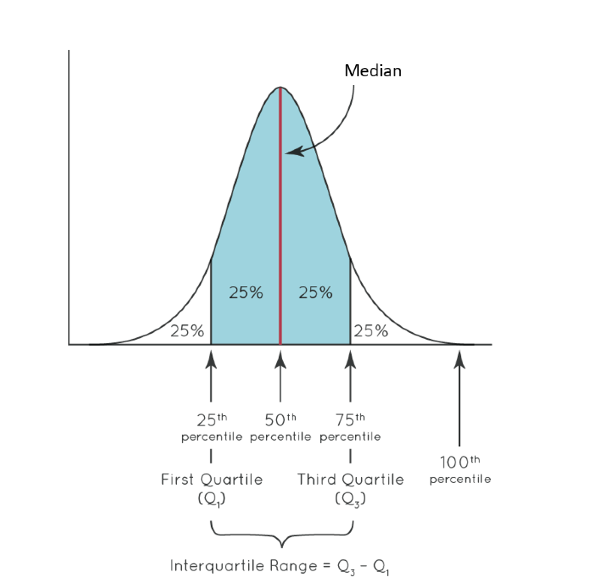
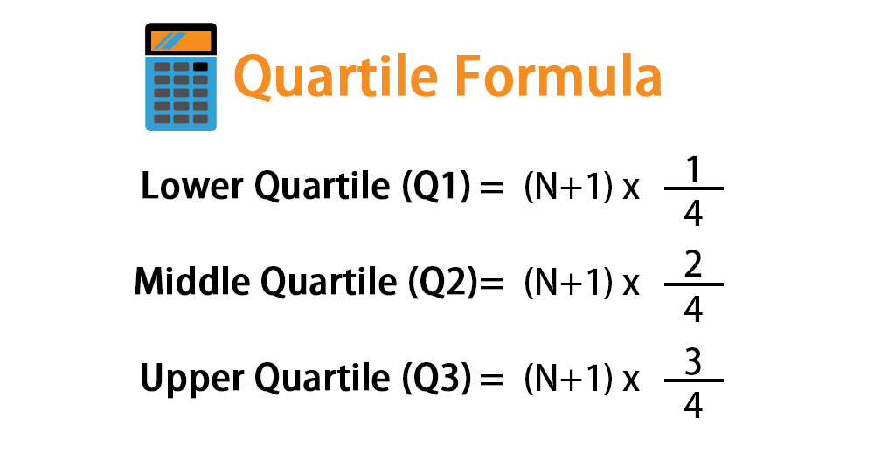

Quartile
Introduction
The quartile formula helps in calculating the value that divides a list of numbers into quarters.
The data is firstly arranged into ascending order and is then divided into quartiles.
Median divides a given data into two equal parts while quartiles divide it into four parts. Using the quartile formula we can find the first quartile, second quartile, and third quartile.
Quartile Formula
Lower Quartile (Q1) = ( N + 1 ) * 1 / 4
Middle Quartile (Q2) = ( N + 1 ) * 1 / 2
Upper Quartile (Q3) = ( N + 1 ) * 3 / 4
Example
Find the 1st, 2nd and 3rd quartile in the following data set: 4, 5, 8, 7, 11, 9, 9
Let us first arrange our array in ascending order and it becomes 4, 5, 7, 8, 9, 9, 11
The median (Q2) of our data is 8.
The 1st quartile (Q1) of our data is 5.
The 3rd quartile (Q3) of our data is 9.